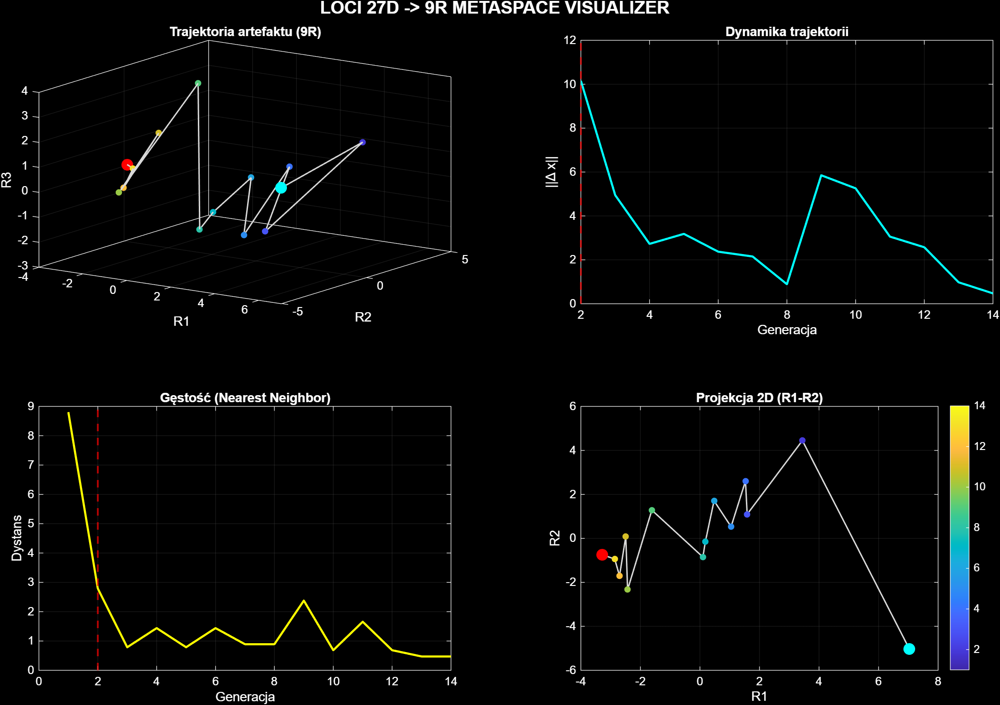
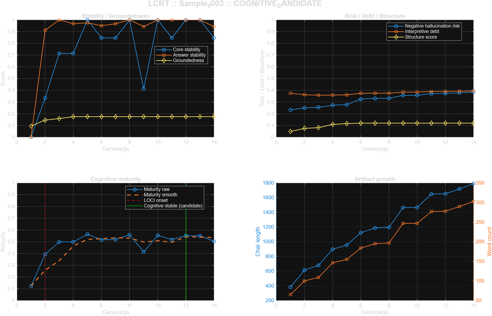
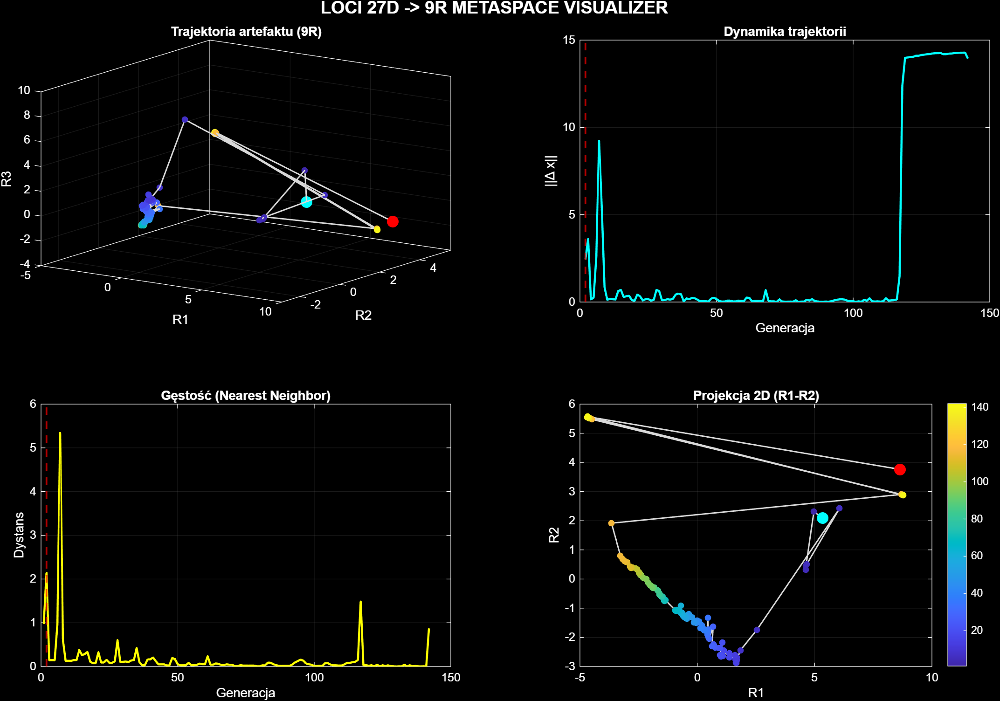
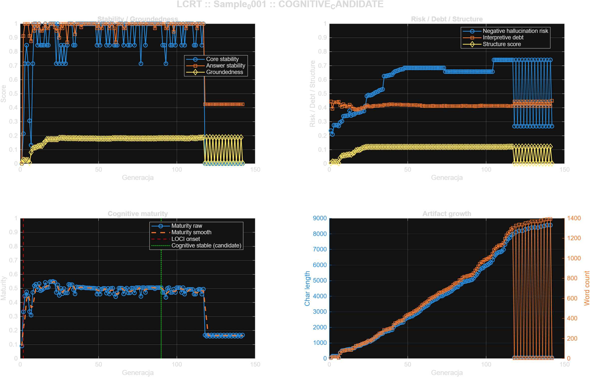
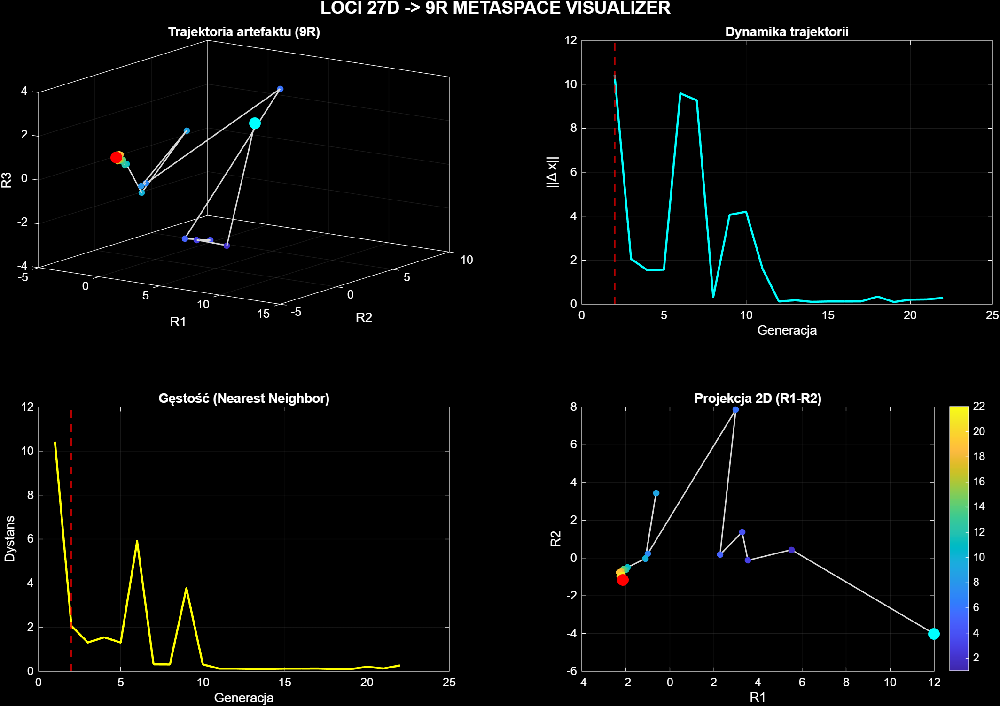
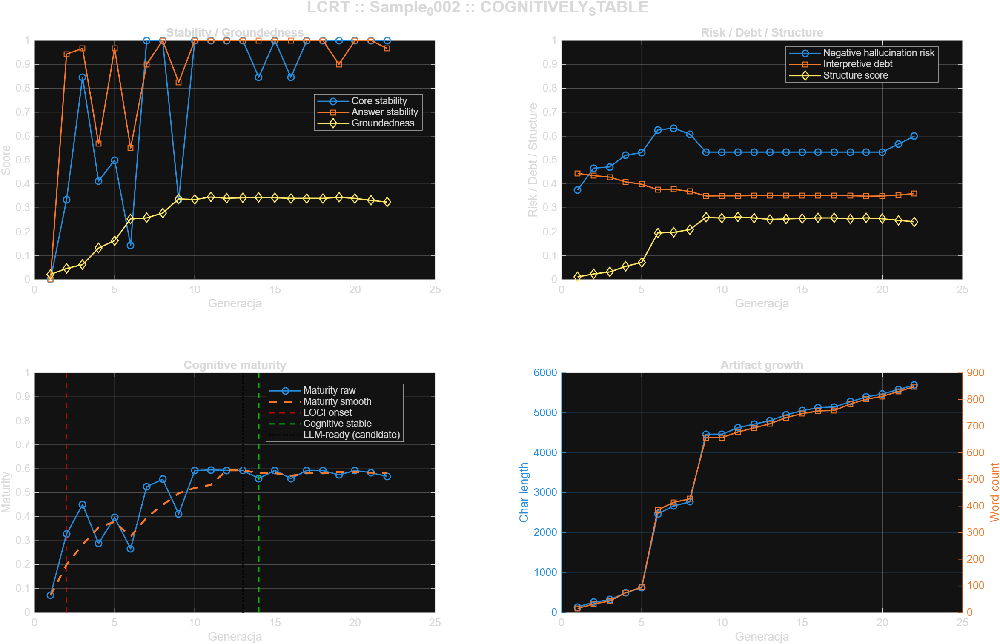

Statyczny raport budowany na podstawie już istniejących wyników zapisanych w katalogu
LOCI/results/. Python zbiera gotowe analizy, kopiuje niezbędne media do katalogu raportu
i generuje jedną stronę HTML, która wyłącznie prezentuje wcześniej policzone metryki metaspace i LCRT.
Analiza rekurencyjna wskazuje przejście od wcześniejszych próbek o charakterze „Exploratory / Divergent” do późniejszych próbek bliższych trybowi „Structured / Modular”. Proces nie dotyczy wyłącznie pojedynczych artefaktów, lecz samej ewolucji heurystycznej w czasie. Kolejne sample są traktowane jako etapy przebudowy połączeń funkcjonalnych: od większej dystrybucji, entropii i rozproszenia ku większej selektywności, modułowości i stabilizacji rdzenia poznawczego.
| Sample | Year | Network mode | Cognitive | LLM | Maturity | Groundedness | Trajectory |
|---|---|---|---|---|---|---|---|
| Sample_0003 | 2015 | Exploratory / Divergent | candidate | none | 0.4833 | 0.1660 | 44.6176 |
| Sample_0001 | 2018 | Exploratory / Divergent | candidate | none | 0.4286 | 0.1548 | 393.3999 |
| Sample_0002 | 2026 | Structured / Modular | confirmed | candidate | 0.4945 | 0.2710 | 46.5890 |
Sample_0003 jest klasyfikowany jako „Exploratory / Divergent”. Próbka jest osadzona na osi czasu w roku 2015. Relatywnie krótka trajektoria wskazuje na szybszą konwergencję i bardziej zwartą organizację procesu. Niższa długość trajektorii sugeruje bardziej skupiony ruch w metaspace. Groundedness pozostaje umiarkowany lub niski, więc artefakt nadal zostawia modelowi sporą swobodę interpretacji. Ryzyko halucynacyjne proxy jest umiarkowane lub obniżone. Poziom cognitive-ready pozostaje kandydatem. Poziom LLM-ready nie został osiągnięty.


Sample_0001 jest klasyfikowany jako „Exploratory / Divergent”. Próbka jest osadzona na osi czasu w roku 2018. Długa trajektoria wskazuje na intensywną eksplorację przestrzeni semantycznej i większą dywergencję stanów. Duża długość trajektorii sugeruje wysoką amplitudę przejść między stanami znaczeń. Groundedness pozostaje umiarkowany lub niski, więc artefakt nadal zostawia modelowi sporą swobodę interpretacji. Ryzyko halucynacyjne proxy pozostaje podwyższone, co utrudnia pełne potwierdzenie gotowości LLM-safe. Poziom cognitive-ready pozostaje kandydatem. Poziom LLM-ready nie został osiągnięty.


Sample_0002 jest klasyfikowany jako „Structured / Modular”. Próbka jest osadzona na osi czasu w roku 2026. Relatywnie krótka trajektoria wskazuje na szybszą konwergencję i bardziej zwartą organizację procesu. Niższa długość trajektorii sugeruje bardziej skupiony ruch w metaspace. Groundedness osiąga poziom wskazujący na względnie zakotwiczoną strukturę poznawczą. Ryzyko halucynacyjne proxy pozostaje podwyższone, co utrudnia pełne potwierdzenie gotowości LLM-safe. Poziom cognitive-ready jest potwierdzony. Poziom LLM-ready pozostaje kandydatem.

